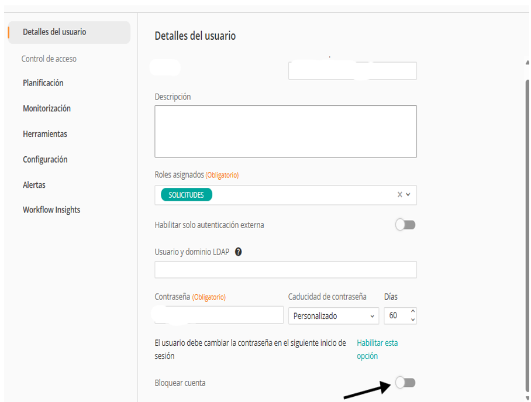

Automatización de Activación y Desactivación de Usuarios en Control-M
Solución automatizada en Python para gestionar permisos y accesos de usuarios en la plataforma empresarial Control-M, integrando su API mediante autenticación por token para ejecutar acciones administrativas de forma segura y eficiente.
Participación:
- Análisis de API mediante Swagger
- Validación de endpoints con Postman
- Desarrollo del script Python e integración REST
- Autenticación segura y manejo de errores